紅葉 もみじ momiji
ชื่ออื่นmomiji
อร่อยที่สุดในเดือน ก.ย., ต.ค.
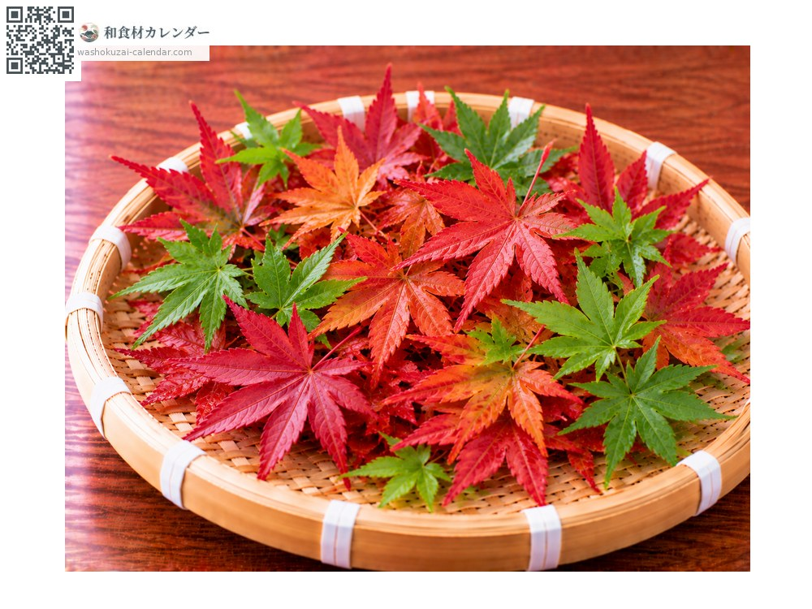
ช่วงอร่อยที่สุดมีจำหน่าย
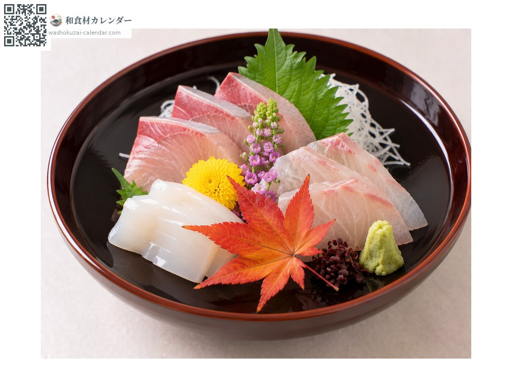
วางข้างซาชิมิหรือในสำรับฮัสสึน ใบเดียวก็สื่อถึงฤดูใบไม้ร่วงได้
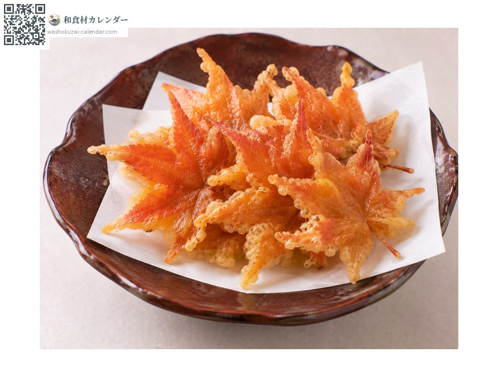
ใบที่ดองเกลือแล้วชุบแป้งหวานทอด เป็นขนมของแถบคันไซ
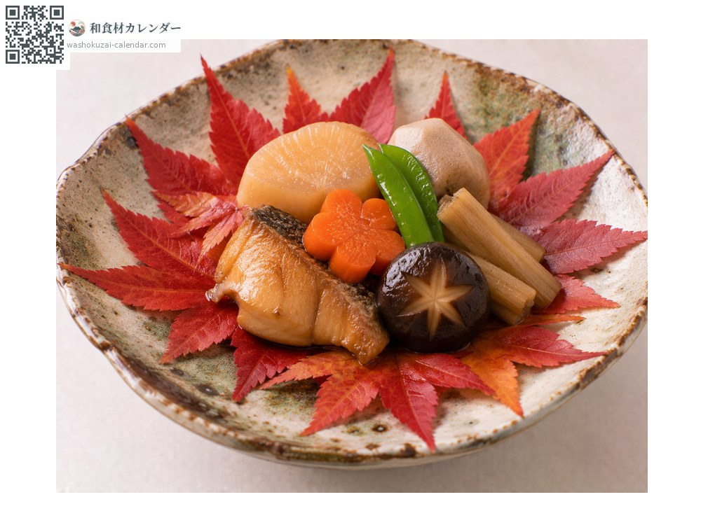
ปูบนจานหรือถาดแล้ววางอาหารทับ
สีสดใส ขอบใบไม่ช้ำ รูปทรงสวยงาม
ไม่ทนความแห้ง ห่อกระดาษชื้นแล้วปิดสนิทแช่เย็น ใช้ภายในไม่กี่วัน
ในอาหารญี่ปุ่นใช้เป็น อาชิไร คือเครื่องตกแต่งที่สื่อฤดูกาลด้วยสายตา ใช้ใบที่ปลูกเพื่อการนี้โดยเฉพาะ ไม่ใช้ใบที่เก็บจากภูเขา ที่เมืองมิโนโอะ โอซากะ ใบดองเกลือชุบแป้งทอดเป็นขนมขึ้นชื่อ
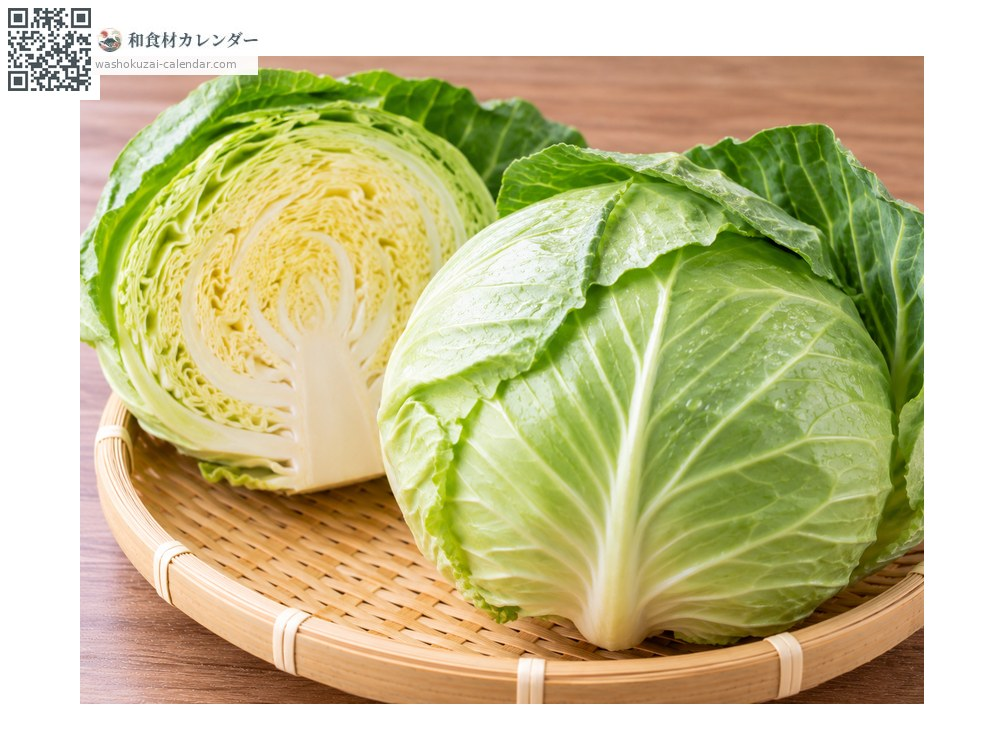
กะหล่ำปลี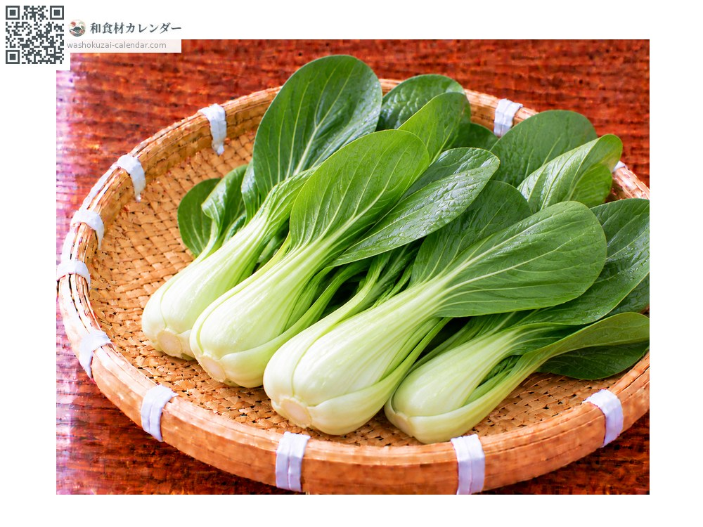
ผักกวางตุ้งฮ่องเต้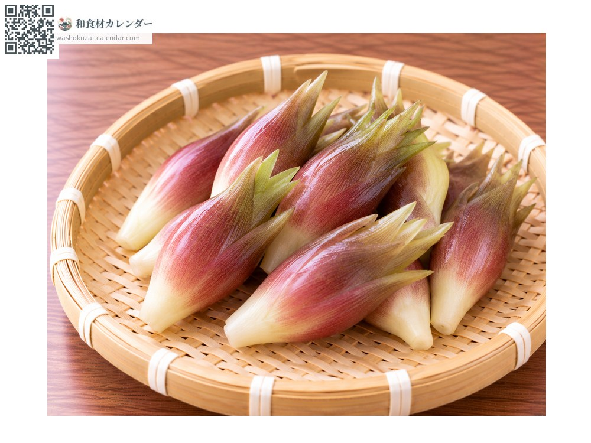
เมียวกะ (ดอกขิงญี่ปุ่น)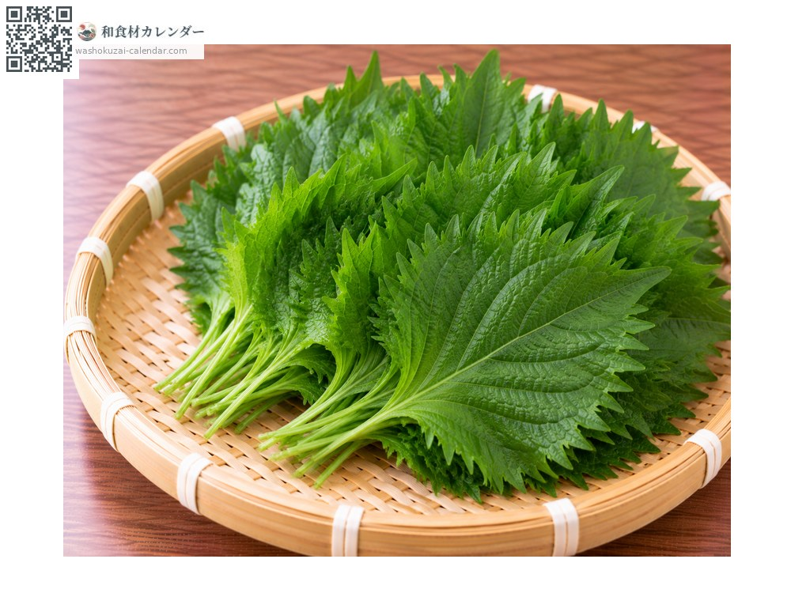
ใบชิโสะ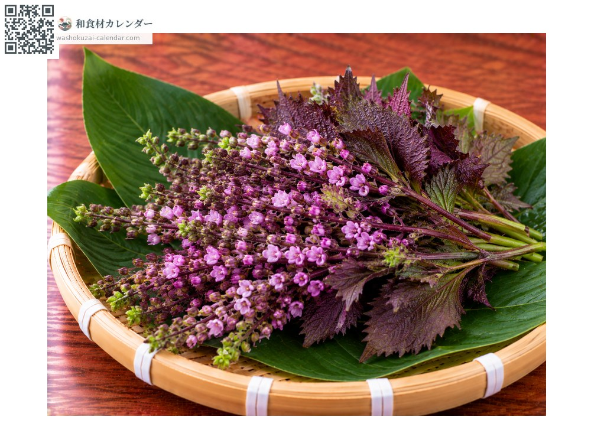
ช่อดอกชิโสะ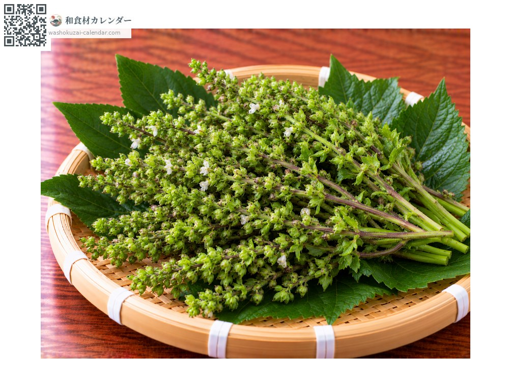
ช่อเมล็ดชิโสะ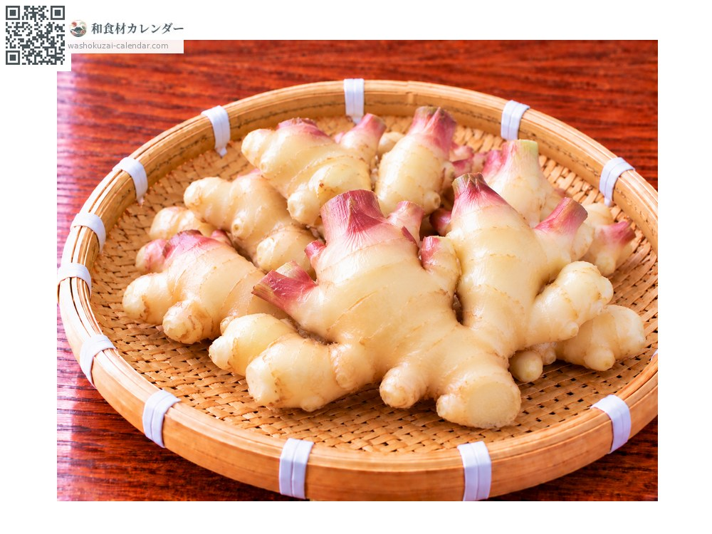
ขิงญี่ปุ่น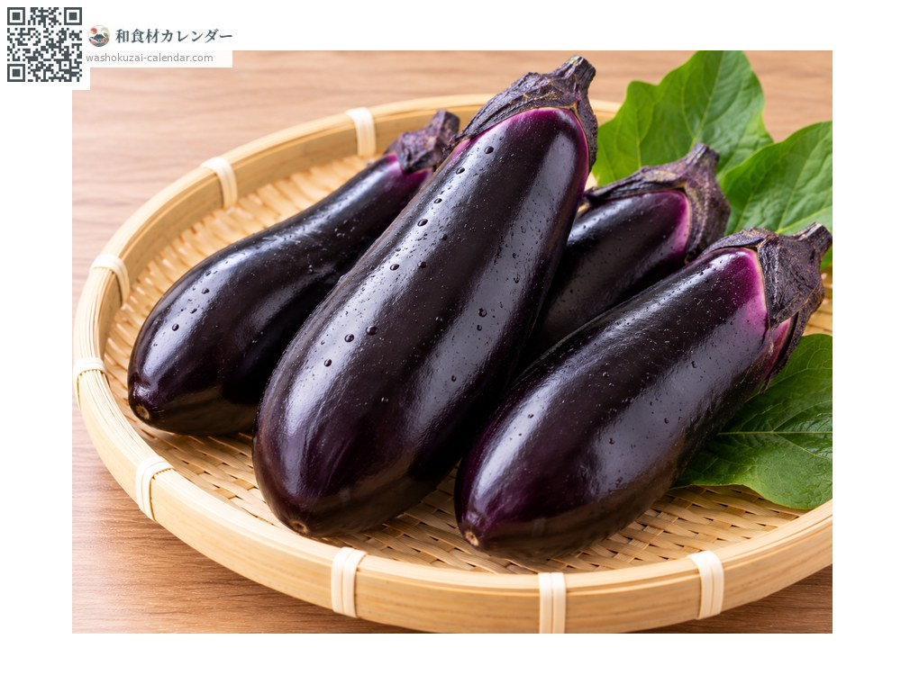
มะเขือม่วงญี่ปุ่น